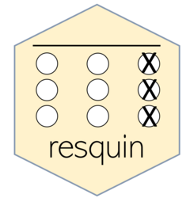

Summary function for resp_indicator objects
Source:R/s3_methods.R
summary.resp_indicator.RdSummarizes results of resp_* functions.
Usage
# S3 method for class 'resp_indicator'
summary(object, quantiles, ...)Value
A resp_indicator summary object. Works like a list with two elements:
quantile_estimates. A dataframe of estimated quantiles for the response quality indicators calculated.mean_estimates. A named vector with means of response quality indicators calculated.
Examples
resp_distributions(nep) |> summary()
#>
#> ── Averages of response quality indicators
#> n_na prop_na ii_mean ii_sd ii_median mahal
#> 2.75 0.18 3.36 1.15 3.66 3.71
#>
#> ── Quantiles of response quality indicators
#> # A tibble: 5 × 7
#> quantiles n_na prop_na ii_mean ii_sd ii_median mahal
#> <chr> <dbl> <dbl> <dbl> <dbl> <dbl> <dbl>
#> 1 0% 0 0 2.27 0 1 1.52
#> 2 25% 0 0 3.13 0.92 3 2.91
#> 3 50% 0 0 3.33 1.12 4 3.54
#> 4 75% 0 0 3.53 1.39 4 4.33
#> 5 100% 15 1 5 2.07 5 8.17